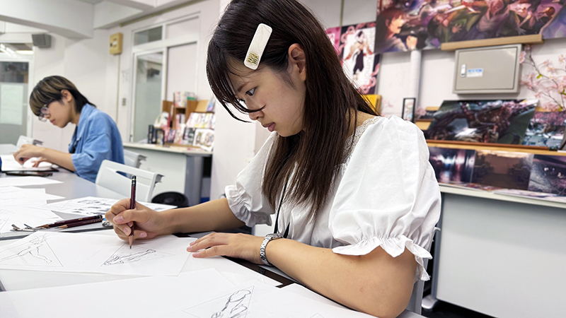

製菓デザイン学科
“上手い人だらけで埋もれる気がしてた

情に棹させば流される。智に働けば角が立つ。どこへ越しても住みにくいと悟った時、詩が生れて、画が出来る。とかくに人の世は住みにくい。意地を通せば窮屈だ。とかくに人の世は住みにくい。どこへ越しても住みにくいと悟った時、詩が生れて、画が出来る。智に働けば角が立つ。


私たちOCサポーターも、進路に悩んだ高校生でした。
直近2つの日程だけを表示します。
“上手い人だらけで埋もれる気がしてた
情に棹させば流される。智に働けば角が立つ。どこへ越しても住みにくいと悟った時、詩が生れて、画が出来る。とかくに人の世は住みにくい。意地を通せば窮屈だ。とかくに人の世は住みにくい。どこへ越しても住みにくいと悟った時、詩が生れて、画が出来る。智に働けば角が立つ。
優しい先輩との出会いが心を変えた

高校二年生の頃、就職するか進学するかで迷っていました。そんな時、学校の進路ガイダンスに来ていたのが日本デザイン福祉専門学校です。先生方のあたたかい雰囲気に惹かれて参加したオープンキャンパスでは、緊張していた私の心を優しい先輩たちがやわらげてくれました。その後も、本当に進学するか迷っていた私の話を入学前から親身に聞いてくれ、入学してからもずっと気にかけてくれる先生方のおかげで、「この学校を選んでよかった」と心から思っています。」

子どもは好き。でも向いてるか分からなかった
情に棹させば流される。智に働けば角が立つ。どこへ越しても住みにくいと悟った時、詩が生れて、画が出来る。とかくに人の世は住みにくい。意地を通せば窮屈だ。とかくに人の世は住みにくい。どこへ越しても住みにくいと悟った時、詩が生れて、画が出来る。智に働けば角が立つ。

イベント開始5分前までにご来校ください。オーキャンサポーターがお出迎えしますよ♪

気になることをわかりやすくご紹介します。
初めての方でも安心して聞ける内容になっています。

意外と映えスポットがあるんですよ！
入学前に感じる不安は誰もが抱えるもの。
スタッフと先輩が親切にサポートします。

講座の中で学科のことや将来のことなど、なんでもお気軽にご相談ください。
体験講座終了後も随時個別相談やってます！